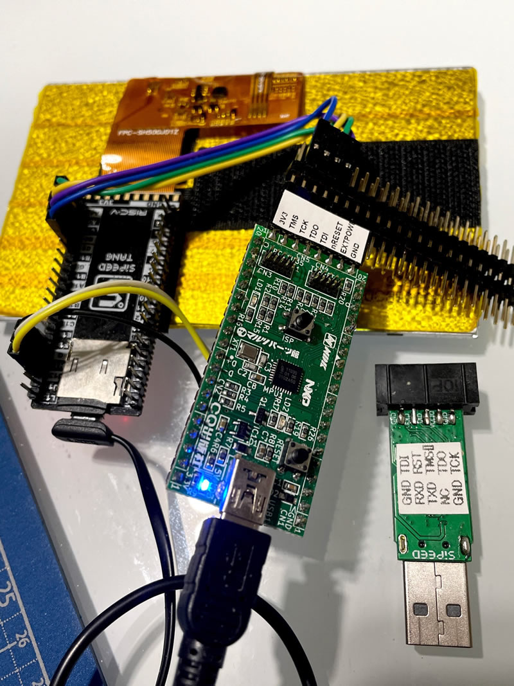

By writing the DAPLink firmware to a commercially available LPC11U35 microcontroller board, it can be used as a JTAG probe for OpenOCD.
First, build the DAPLink firmware with gcc. The "lpc11u35_ssci1114_if" part can be any of the targets for lpc11u35. This is for burning the FLASH built into the ARM CPU by dragging and dropping it onto a drive that you can see as MassStorage from your PC, but anything is fine for non-ARM development.
$ git clone -b develop https://github.com/ARMmbed/DAPLink daplink-gcc
$ cd daplink-gcc
$ pip3 install -r requirements.txt
$ python tools/progen_compile.py -t make_gcc_arm lpc11u35_ssci1114_if
If the build is successful, you should see "daplink-gcc/projectfiles/make_gcc_arm/lpc11u35_ssci1114_if/build/lpc11u35_ssci1114_if_crc.bin" After confirming that you can build, modify the source to enable JTAG. This is because most targets only have SWD debugging enabled, so JTAG cannot be used.
To enable JTAG, Open the file "daplink-gcc/source/hic_hal/nxp/lpc11u35/DAP_config.h" with an editor and change the following
...
/// Indicate that Serial Wire Debug (SWD) communication mode is available at the Debug Access Port.
/// This information is returned by the command \ref DAP_Info as part of Capabilities.
#ifndef DAP_SWD
#define DAP_SWD 0 ///< SWD Mode: 1 = available, 0 = not available
#endif
/// Indicate that JTAG communication mode is available at the Debug Port.
/// This information is returned by the command \ref DAP_Info as part of Capabilities.
#ifndef DAP_JTAG
#define DAP_JTAG 1 ///< JTAG Mode: 1 = available, 0 = not available
#endif
...
To change the JTAG signal line assignments, open "IO_Config.h" in the same folder and make the following changes (This is an example of changing the TDI signal assignment from PIO0_17 to PIO0_22.)
...
// TDI Pin PIO0_17
//#define PIN_TDI_PORT 0
//#define PIN_TDI_BIT 17
//#define PIN_TDI (1 << PIN_TDI_BIT)
//#define PIN_TDI_IOCON LPC_IOCON->PIO0_17
//#define PIN_TDI_IOCON_INIT (FUNC_0 | PULL_UP_ENABLED)
// TDI Pin PIO0_22
#define PIN_TDI_PORT 0
#define PIN_TDI_BIT 22
#define PIN_TDI (1 << PIN_TDI_BIT)
#define PIN_TDI_IOCON LPC_IOCON->PIO0_22
#define PIN_TDI_IOCON_INIT (FUNC_0 | PULL_UP_ENABLED)
...
Even with SWD disabled, I got a reference error in the SWD related code. This is an unused section, so let's comment it out.
The following is an example.
"daplink\interface\swd_host.c (100)"
uint8_t swd_transfer_retry(uint32_t req, uint32_t *data)
{
uint8_t i, ack;
for (i = 0; i < MAX_SWD_RETRY; i++) {
//ack = SWD_Transfer(req, data); // <== This Line
// if ack != WAIT
if (ack != DAP_TRANSFER_WAIT) {
return ack;
}
}
return ack;
}
An example OpenOCD configuration file for debugging the VexRiscv SoC can be found here.
